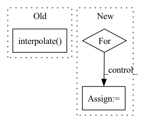

Pattern ID :1441
Before Change
offsetx = torch.randint(0, width - size, ())
offsety = torch.randint(0, width - size, ())
apper = out[:, :, offsetx:offsetx + size, offsety:offsety + size]
apper = torch.nn.functional.interpolate( apper, (224, 224), mode = "bilinear", align_corners = False)
pieces.append(normalize_image(apper))
image = torch.cat(pieces)
After Change
pieces = []
for (num_images, (lo, hi), downsize) in cutout_specs:
for _ in range(num_images):
cutout = rand_cutout(out, ratio = (lo, hi))
if exists(downsize):
cutout = interpolate(cutout, downsize)
resized_cutout = interpolate(cutout, 224)
pieces.append(normalize_image(resized_cutout))
In pattern: SUPERPATTERN
Frequency: 3
Non-data size: 3
Instances Fragment ID: 4187708
Project Name: lucidrains/deep-daze
Commit Name: 31c2b6b8607914862120163bc48908ad3e6b5c12
Time: 2021-01-17
Author: lucidrains@gmail.com
File Name: deep_daze/deep_daze.py
M Class Name: DeepDaze
N Class Name: DeepDaze
M Method Name: forward(3)
N Method Name: forward(3)
M Parent Class: nn.Module
N Parent Class: nn.Module
M File Name: deep_daze/deep_daze.py
N File Name: deep_daze/deep_daze.py
M Start Line: 67
M End Line: 83
N Start Line: 96
N End Line: 113
Before Change
// adversarial loss for multi-scale discriminators
for discr, scale in zip(self.discriminators, self.discr_multi_scales):
scaled_fake = F.interpolate( recon_x, scale_factor = scale)
fake_logits = discr(scaled_fake)
one_adversarial_loss = hinge_gen_loss(fake_logits)
adversarial_losses.append(one_adversarial_loss)
After Change
feature_losses = []
for real_intermediates, fake_intermediates in discr_intermediates:
losses = [F.mse_loss(real_intermediate, fake_intermediate) for real_intermediate, fake_intermediate in zip(real_intermediates, fake_intermediates)]
feature_losses.extend(losses)
feature_loss = torch.stack(feature_losses).mean() Fragment ID: 4187707
Project Name: lucidrains/audiolm-pytorch
Commit Name: d0e1f681048255b2b90790053ad0d3f72066d0e4
Time: 2022-10-28
Author: lucidrains@gmail.com
File Name: audiolm_pytorch/audiolm_pytorch.py
M Class Name: SoundStream
N Class Name: SoundStream
M Method Name: forward(4)
N Method Name: forward(4)
M Parent Class: nn.Module
N Parent Class: nn.Module
M File Name: audiolm_pytorch/audiolm_pytorch.py
N File Name: audiolm_pytorch/audiolm_pytorch.py
M Start Line: 274
M End Line: 325
N Start Line: 277
N End Line: 351
Before Change
inters = inters[::-1] // feature maps from bottom to top, same order as input x
outputs = [inters[0]]
for i, conv in enumerate(self.output_convs):
out = F.interpolate( outputs[-1], scale_factor=0.5, mode="nearest") // resize(P3td)
if i < len(self.output_convs) - 1:
out = self.fuse([x[i+1], inters[i+1], out]) // P4in + P4td + resize(P3td)
else:After Change
// top-down
tds = [None] * self.num_levels
tds[-1] = x[-1]
for i in range(self.num_levels - 2, -1 , -1):
tds[i] = self.td_fuses[i]([x[i], self.upsample(tds[i+1])]) // P6td = conv(P6in + resize(P7td))
// bottom-up
outs = [None] * self.num_levels Fragment ID: 4187706
Project Name: gau-nernst/vision-toolbox
Commit Name: 0844b6bcb142e63b09cf6ae44e5087c20d52c380
Time: 2022-04-10
Author: gau.nernst@yahoo.com.sg
File Name: vision_toolbox/necks.py
M Class Name: BiFPNLayer
N Class Name: BiFPNLayer
M Method Name: forward(2)
N Method Name: forward(2)
M Parent Class: nn.Module
N Parent Class: nn.Module
M File Name: vision_toolbox/necks.py
N File Name: vision_toolbox/necks.py
M Start Line: 163
M End Line: 180
N Start Line: 160
N End Line: 172